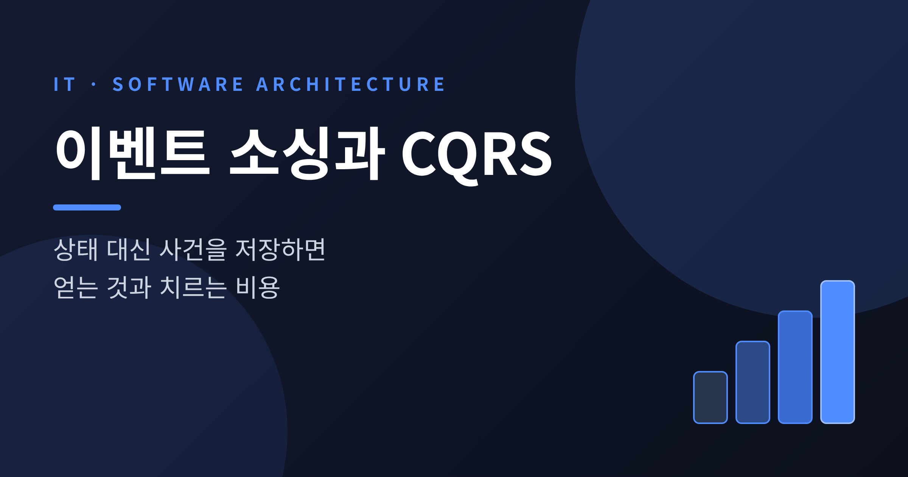
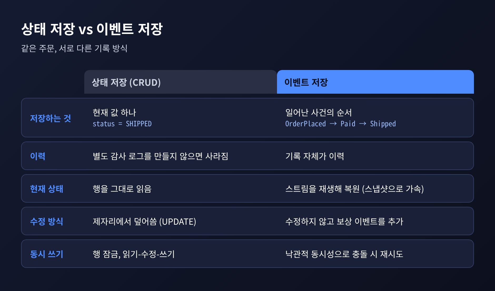
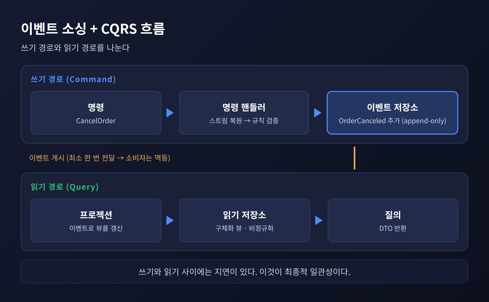
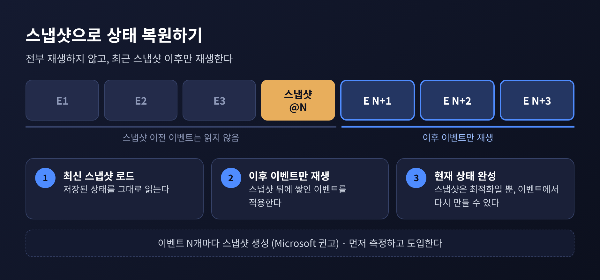
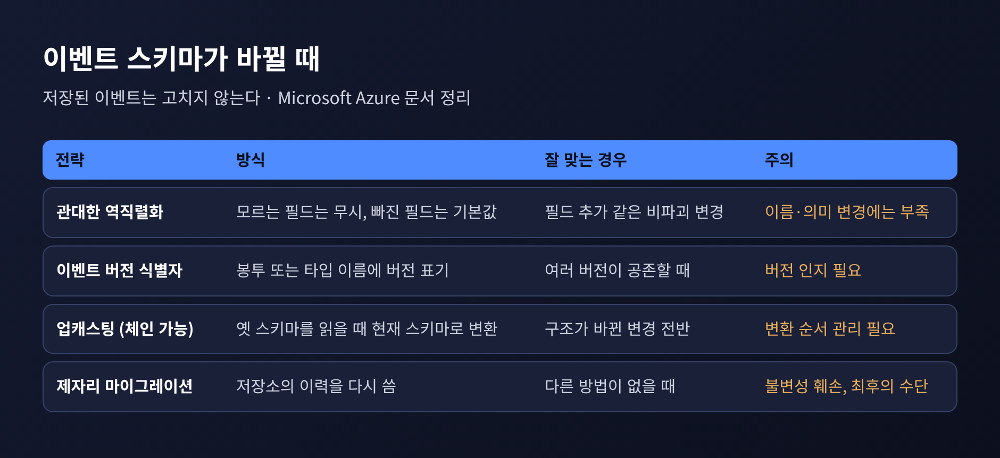
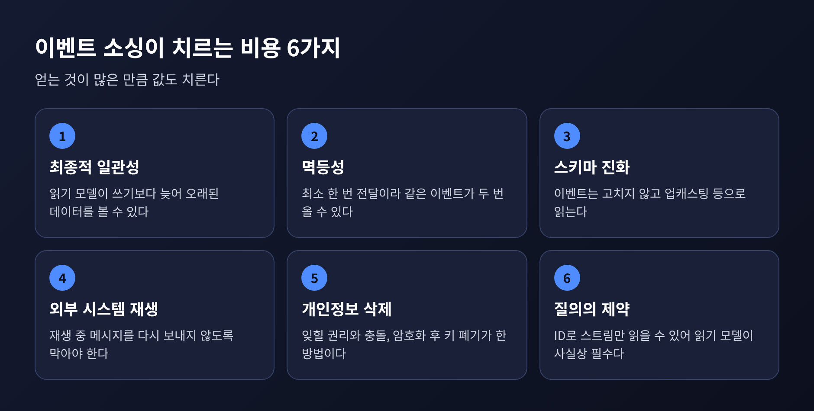

오늘은 이벤트 소싱과 CQRS를 정리해 보려 합니다. 현재 상태를 덮어쓰는 대신 일어난 사건을 차곡차곡 쌓는 설계가 무엇을 주고, 무엇을 가져가는지 살펴봅니다. Spring 기반으로 서비스를 만드시는 분이라면 구조 예시를 따라가며 읽으셔도 좋겠습니다.
먼저 결론부터 말씀드립니다.
대부분의 애플리케이션은 현재 상태만 저장하고 같은 자리에서 갱신합니다. 주문 테이블의 status 컬럼이 PAID에서 SHIPPED로 바뀌면, 이전 값은 사라집니다.
Microsoft Azure 아키텍처 문서는 이 방식의 약점으로 두 가지를 짚습니다. 하나는 쓰기 경합입니다. 읽고, 고치고, 쓰는 사이클과 행 잠금 때문에 같은 엔터티에 쓰기가 몰리면 병목이 됩니다. 다른 하나는 감사 가능성입니다. 변경 내용을 따로 기록하는 장치가 없다면 데이터의 이력을 잃습니다.
이벤트 소싱은 이 질문에서 출발합니다. 결과만 저장하지 말고, 결과에 이르게 한 사건을 저장하면 어떨까요.
이벤트 소싱은 객체에 일어난 행위의 전체 시퀀스를 추가 전용(append-only) 저장소에 저장합니다. 이 저장소가 시스템 오브 레코드, 곧 진실의 원천입니다. AddedItemToOrder, OrderCanceled 같은 이벤트가 시간 순서대로 쌓입니다.
엔터티마다 이벤트 스트림, 즉 순서가 있는 이벤트 목록을 가집니다. 현재 상태가 필요하면 스트림을 처음부터 재생(replay)해 복원합니다. 이 과정을 문서에서는 rehydration이라 부릅니다.

Spring 개발자에게 익숙한 모습으로 옮기면 대략 이렇습니다. 특정 라이브러리의 API가 아니라 구조를 보여 주는 의사 코드입니다.
// 명령 핸들러: 스트림을 읽어 상태를 복원하고, 판단하고, 이벤트만 추가한다
void handle(CancelOrder cmd) {
List<Event> history = eventStore.load(cmd.orderId()); // 스트림 읽기
Order order = Order.rehydrate(history); // 재생으로 현재 상태 복원
List<Event> newEvents = order.cancel(cmd.reason()); // 비즈니스 규칙 검증 + 이벤트 생성
eventStore.append(cmd.orderId(), newEvents,
history.size()); // 낙관적 동시성: 읽은 이후 바뀌었으면 거부
}
// Order 내부: 이벤트를 적용해 상태를 만든다
void apply(OrderCanceled e) { this.status = CANCELED; }
핵심은 마지막 줄의 동시성 검사입니다. 스트림을 읽은 뒤 다른 요청이 이벤트를 추가했다면 append는 거부됩니다. 핸들러는 다시 읽고, 다시 판단하고, 재시도합니다. 행 잠금 대신 이 방식으로 충돌을 다룹니다.
한 가지 짚어 둘 점이 있습니다. 이벤트에는 결과가 아니라 의도가 담겨야 합니다. "좌석 2개가 예약되었다"는 "남은 좌석이 42로 바뀌었다"보다 가치가 큽니다. 후자만 쌓으면 이벤트 저장소는 비즈니스 의미가 없는 변경 로그로 전락한다는 것이 Microsoft 문서의 지적입니다.
직렬화된 이벤트 로그는 그 자체로 감사 기록이 됩니다. Martin Fowler는 사용자가 실제로 무엇을 했는지 지원 담당자가 정확히 확인할 수 있다고 설명합니다. 일반 로깅으로도 일부는 가능하지만, 이벤트 로그가 더 정밀합니다. 회계 원장이 흔한 비유로 쓰이는 까닭도 같습니다. 모든 항목이 원천 이벤트로 거슬러 올라갑니다.
시점 조회도 자연스럽게 따라옵니다. 과거 특정 시점의 상태가 궁금하면, 빈 상태에서 그 시점까지만 이벤트를 재생하면 됩니다. 상태 저장 방식이었다면 별도의 이력 테이블을 미리 설계해 두어야 했을 일입니다.
재생의 쓸모는 조회에 그치지 않습니다. Fowler가 꼽는 활용은 다음과 같습니다.
예전에는 운영 데이터를 복사해 와서 눈으로 추적했다면, 이 구조에서는 사건 순서를 그대로 틀어 볼 수 있습니다.
이벤트 소싱에는 불편한 구석이 있습니다. 질의입니다. Microsoft 문서에 따르면 이벤트 저장소에는 SQL에 해당하는 것이 없습니다. 엔터티 ID로 스트림을 읽을 수 있을 뿐이고, 현재 상태는 관련 이벤트를 모두 재생해야 알 수 있습니다.
그래서 CQRS가 등장합니다. 정보를 갱신하는 모델과 읽는 모델을 분리하는 패턴입니다. 명령(command)은 "Set ReservationStatus to Reserved"가 아니라 "객실 예약"처럼 비즈니스 작업을 표현하고, 질의(query)는 데이터를 바꾸지 않고 DTO를 돌려줍니다. 둘을 결합하면 이벤트 저장소가 쓰기 모델이 되고, 읽기 모델은 이벤트로 만든 비정규화 구체화 뷰가 됩니다.

이 조합의 장점이 하나 있습니다. 뷰는 언제든 다시 만들 수 있습니다. 이력이 보존되어 있으니 읽기 모델의 모양이 바뀌어도 재생으로 재생성합니다. Microsoft 문서는 구체화 뷰를 내구성 있는 읽기 전용 캐시에 비유합니다.
다만 Greg Young의 문서에 따르면 두 개념은 "공생 관계"이지 한 몸이 아닙니다. Fowler 역시 CQRS가 본질적으로 이벤트 기반은 아니라고 말합니다. CQRS만 쓰고 이벤트 소싱은 쓰지 않는 구성도 가능합니다.
주문 하나의 이벤트가 수천 개 쌓였다면 요청마다 처음부터 재생하기는 부담스럽습니다. 이때 쓰는 것이 스냅샷입니다.
Microsoft 문서는 N개의 이벤트마다 스냅샷을 만들 것을 권합니다. 복원할 때는 가장 최근 스냅샷을 읽고, 그 이후의 이벤트만 재생합니다. 스냅샷은 최적화일 뿐 진실의 원천이 아닙니다. 이벤트로부터 언제든 다시 만들 수 있다는 점이 중요합니다.

Axon Framework는 이를 설정으로 제공합니다. 애그리거트를 불러오는 데 필요한 이벤트 수가 임계치를 넘으면 스냅샷을 만드는 트리거가 있고, 문서 예시의 임계치는 500입니다. 이 숫자는 예시일 뿐이므로 따라 하기보다 직접 측정하시길 권합니다. 문서도 먼저 로드되는 이벤트 수를 측정하고, 스냅샷은 별도 스레드에서 만들며, 캐시를 함께 쓰라고 안내합니다.
Greg Young의 문서에는 흥미로운 조언이 있습니다. 개발 초기에는 스냅샷 없이 진행해도 된다는 것입니다. 나중에 언제든 도입할 수 있기 때문입니다. 서로 어긋나는 말처럼 보이지만, 결국 측정한 뒤 필요할 때 도입하라는 한 방향으로 모입니다.
이제 비용을 따져 볼 차례입니다. 가장 오래 괴롭히는 것은 스키마 진화입니다.
이벤트 저장소는 영구적인 진실의 원천이므로 이벤트 데이터를 갱신해서는 안 됩니다. 잘못을 바로잡을 때도 기존 이벤트를 고치지 않고, 보상 이벤트를 추가합니다. SeatsReserved를 지우는 대신 ReservationCanceled를 쌓는 식입니다.
그런데 이벤트 클래스는 코드이기에 계속 바뀝니다. 필드가 늘고, 이름이 바뀝니다. 몇 년 전 저장된 이벤트도 지금 코드가 읽을 수 있어야 합니다. Microsoft 문서가 정리한 대응책은 네 가지입니다.

Spring 환경에서 자주 거론되는 Axon의 업캐스팅을 예로 들겠습니다. 업캐스터는 리비전 x의 이벤트를 받아 리비전 x+1의 이벤트를 내놓습니다. 리비전 단계마다 작은 업캐스터를 하나씩 만들어 체인으로 연결합니다. 문서의 예시에서는 ComplaintEvent가 1.0에서 2.0이 되며 description 필드가 추가되고, 옛 이벤트에는 기본값이 채워집니다. 저장된 이벤트는 그대로이고, 스트림에서 꺼낼 때 변환됩니다.
// 개념 예시: 1.0 -> 2.0 업캐스터. 저장된 이벤트는 건드리지 않고 읽는 순간 변환한다
if (event.revision().equals("1.0")) {
event = event.withRevision("2.0")
.withField("description", "no complaint description"); // 기본값 채우기
}
바꿀 수 있는 범위에도 한계가 있습니다. 페이로드와 메타데이터는 조정할 수 있지만, 식별자와 타임스탬프는 손댈 수 없습니다. 업캐스터의 등록 순서도 지켜야 하고, 스냅샷에는 별도 제약이 붙습니다. 기존 이력을 다시 쓰는 제자리 마이그레이션은 불변성을 깨므로 최후의 수단으로 남겨 두라고 문서는 말합니다.
CQRS를 붙이면 읽기 모델은 쓰기보다 늦습니다. 쓰기, 이벤트 게시, 소비자 처리 사이에 지연이 있고, 그 사이 사용자는 오래된 데이터를 볼 수 있습니다. Greg Young은 명령 측은 일관성을 우선하고 질의 측은 대개 최종적 일관성을 견딘다고 정리합니다. 다만 Microsoft 문서는 사용자가 오래된 데이터를 근거로 행동하는 경우를 탐지하고 처리하는 일이 신중한 설계를 요한다고 덧붙입니다.
또 하나는 중복 전달입니다. 이벤트 전달은 보통 최소 한 번(at least once) 보장이어서 소비자는 같은 이벤트를 두 번 받을 수 있습니다. 중복 예약 이벤트가 재고를 한 번만 차감하도록 소비자를 멱등하게 만들어야 합니다. 소비자별로 마지막에 처리한 시퀀스 번호를 기록하는 방법이 있습니다. 이를 놓치면 프로젝션이 이벤트 스트림과 어긋나고, 결제나 알림 같은 부작용이 두 번 실행됩니다.
재생에도 함정이 있습니다. 과거 이벤트를 재생하다가 외부 시스템에 메시지를 다시 보내면 곤란합니다. Fowler는 외부 호출을 게이트웨이로 감싸 재생 모드일 때는 호출을 억제하라고 설명합니다. 외부 데이터가 이벤트 당시와 재생 시점 사이에 바뀌었을 가능성도 있어서, 질의 응답을 기록해 두었다가 재생 때 재사용하는 방법을 소개합니다.

이벤트 저장소는 ID 외의 조건으로 찾는 일이 어렵습니다. 그래서 읽기 모델이 사실상 필수가 되고, 결국 CQRS의 복잡도까지 함께 떠안습니다. Microsoft 문서는 이벤트를 만들고 처리하고 뷰를 조립하는 코드가 모두 필요하다고 말합니다.
개인정보는 더 난감합니다. 추가 전용 저장은 "잊힐 권리"와 부딪칩니다. 대안은 두 가지입니다. 개인정보를 이벤트 밖에 두고 ID로 참조하거나, 주체별 키로 필드를 암호화한 뒤 지우고 싶을 때 키를 폐기하는 crypto-shredding입니다. AxonIQ 블로그는 이 방식에도 한계가 있다고 밝힙니다. 기술 발전에 따라 무차별 대입 복호화 위험이 있으므로 모든 관할권의 요건을 충족한다고 단정할 수는 없습니다.
저장소 선택도 숙제입니다. 스트림 읽기, 낙관적 동시성, 스냅샷을 갖춘 전용 저장소가 있고, 관계형 DB의 추가 전용 테이블로도 구현할 수 있지만 그 동작을 직접 만들어야 합니다. Microsoft 문서는 Kafka 같은 메시지 브로커가 이벤트 저장소를 대체하지는 못한다고 못 박습니다. 테스트 방식도 달라집니다. 과거 이벤트를 깔고, 명령을 보내고, 새 이벤트를 검증하는 given-when-then이 기본이 되며, 프로젝션과 멱등성, 스키마 진화는 통합 테스트로 따로 확인해야 합니다.
비용 목록이 길었으니 이제 선을 그어 보겠습니다. Microsoft 문서가 꼽는 쓰지 말아야 할 경우는 이렇습니다.
CQRS에는 Fowler의 경고가 있습니다. 대부분의 시스템에서 CQRS는 위험한 복잡성을 더하고, 자신이 본 사례 중 상당수가 잘 풀리지 않았다는 것입니다. CRUD가 맞는 시스템은 CRUD로 두고, 적용하더라도 시스템 전체가 아닌 특정 경계 컨텍스트에 한정하라고 권합니다. 질의 부담이 문제라면 리포팅 전용 DB가 더 단순한 대안일 수 있습니다.
반대로 잘 맞는 곳도 분명합니다. 의도를 포착해야 하는 도메인, 재생과 롤백과 감사가 요구사항인 영역, 여러 사용자가 같은 데이터를 수정하는 협업 환경이 그렇습니다.
Microsoft 문서의 표현을 빌리면 이벤트 소싱은 전부 아니면 전무의 결정이 아닙니다. 결제 원장에는 이벤트 소싱을, 사용자 프로필이나 설정에는 일반적인 CRUD를 쓰는 식의 혼합이 가능합니다.
저라면 이렇게 묻겠습니다. 이 데이터의 과거를 되짚어야 하는 요구가 실제로 있는가. 있다면 그 요구가 최종적 일관성과 스키마 진화의 부담을 감당할 만큼 큰가.
끝으로 한마디만 더 드리겠습니다. 이벤트 소싱은 기록을 더 잘 남기는 기술이 아니라, 기록이 곧 시스템의 본체가 되는 선택입니다. 그 무게를 감당할 이유가 분명한 곳에 쓰신다면, 사건을 저장하는 설계는 상태를 덮어쓰는 설계가 줄 수 없는 것을 돌려줄 것입니다.